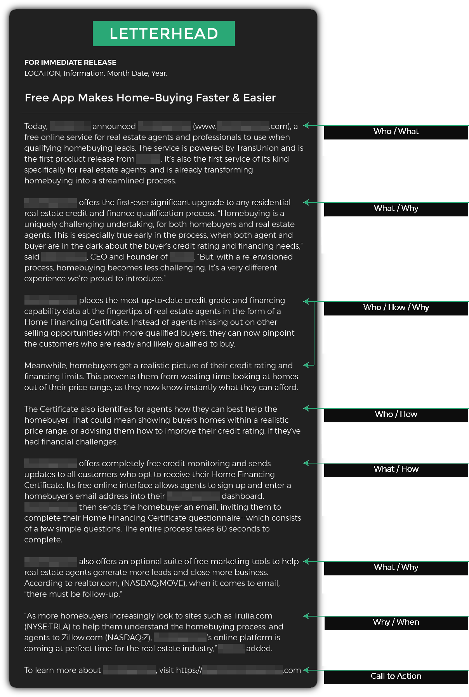

Welcome to Module 3. This week, you’ll learn:
- How to position any story to appeal to a wide audience
- My 3 rules for writing press releases reporters love
- Quick and easy ways to give your press release credibility
- What to do before you write a press release
- The biggest “cardinal sins” of press release copywriting (and how to avoid them)
- How to get great source material that makes your press release shine (without doing tons of research)
- My 4S checklist for writing awesome press release headlines
- How to start your press release off with a strong opening that hooks readers right away
- How to breeze through the body of your press release quickly and easily (including what to do if you get stuck)
- How to polish first drafts into press release gold
Press releases are one of my favorite types of copywriting. They’re short, fun to write, and you can use strategic insights to bring lots of value to the table — even if you know nothing about Public Relations. I’ll show you how.
Even showing clients you understand the strategy and psychology of writing a great press release gives you a huge advantage.
Check out this offer I received from a client after writing a proposal that included just ONE tip on how to write an awesome press release:

The key is understanding that clients don’t really care about press releases — what they want is PUBLICITY for their company (or their client’s company).
Of course, there’s no magic button you can push to get a press release that reaches millions of people.
The trick is to write one that a journalist wants to publicize FOR you.
For example, let’s say you write a press release that grabs the attention of a reporter or editor at a major news site. With the click of a button, she can get your story in front of the masses — instantly.
Why would they do that? Because news sites — big and small — thrive by both creating and SHARING great content.
The more articles they publish, the more clicks they get. And the more clicks they get, the more they earn from advertising.
Does that mean you need dramatic stories that involve police chases, explosions, or fortunes changing hands?
Not at all — newsworthy doesn’t necessarily mean drama.
Remember, reporters are looking for great information. You just need to give them what they’re looking for.
Of course, just like all forms of copywriting, you need to keep the reader in mind when writing a press release. But you also need to get inside the head of a journalist, so you know how to write a press release they’re eager to publicize.
THEY are the gatekeeper that decides if it sees the light of day! Their opinion is the one you care about most.
You already know they want good content to share. But what does “good content” mean to a journalist?
Check out my 3 rules below to find out.
3 Rules for writing press releases reporters love
RULE #1: Find the angle.
Clients will come to you with all sorts of stories to turn into press releases.
But it’s up to you to position the story in a way that gets attention.
The more people your story appeals to, the more likely a reporter will be to share it.
Regurgitating a bunch of facts isn’t going to cut it!
On the other hand, if you know how to find the right angle for your press release, even a mildly interesting story can be spun into a PR win.
Watch the video below for one of my favorite examples of how to find a great angle for your story.
You can use this approach with any story. For example, if a local business is opening a new retail location, how is it going to impact the Average Joe?
- Is it a sign of a local economy that’s starting to boom?
- Is it expected to create new jobs?
- Will it make it easier for consumers to get things they need, while saving time and energy?
Do you see how all of those things are infinitely more compelling to readers of a local newspaper than the “news” that some company is expanding? Which, in turn, makes it more likely an editor will publish it.
RULE #2: Make it credible.
Reporting the news is all about CREDIBILITY.
If your press release is fluffy, hyped up, or skimpy on facts, it’s going to end up in the trash.
This doesn’t mean that all of your press releases need to be huge, “official” news about big companies or government agencies. There are lots of ways to add credibility to any press release (on any topic).
Here are my favorite quick and easy techniques anyone can use:
- Add real names. Don’t just mention a company — talk about a real person at the company, like a manager or the CEO.
- Use statistics and facts. These give your press release objectivity, instead of just being an “opinion piece.”
- Quote people. I’ll show you how to get great quotes that make your press release more credible and more fun to read.
RULE #3: Do the work for them.
Ideally, a reporter would see your press release (either because the client emailed it to them, or placed it on a press release website where it caught their attention) and write an article about it.
So it naturally follows that the less work they have to do to turn your press release into a published article, the more likely they are to want to do it.
For this reason, I like to do as much work as possible for reporters UP FRONT. That way, it’s easy for them to turn my press release into actual NEWS.
In fact, my press releases are generally more like finished articles than a traditional “bare bones” announcement.
I still keep my press releases relatively short — usually about 1 page (300-500 words). But I do the work of finding the right angle and writing great copy so any reporter who’s interested in it can publish it without putting too much thought into it.
The better you’re able to do this, the more effective your press releases are going to be.
Let’s look at a real example of how I put all of these rules into action when writing a press release:
Notice how I:
- Found an angle that appeals to as many people as possible. There are millions of credit union customers in the US, and all of them want better interest rates!
- Used real names, quotes, and even facts and statistics to beef up credibility.
- Wrote the press release as a mini-article, minimizing the amount of work a reporter would need to share it.
Before we dive in…
In a moment, we’re going to get into the how-to of sitting down to write a winning press release.
But first, take a moment to learn how to avoid one of the biggest “cardinal sins” of press release copywriting. I’ll explain more in the video below:
Preparing to write your press release
Good research and preparation are important to all forms of copywriting — but they’re even more key to press releases. That’s because, even though press releases are short, they need to be packed with SUBSTANCE — never hype or opinions.
You’ll start by looking for what reporters themselves are trained to look for: The “who, what, when, where, why, and how.”
Before you write a press release, ask yourself (and your client):
The 5 Ws
WHAT is happening?
Is a new product being launched? Is an event taking place? Is a company hiring a new CFO, or expanding into a new location? Reporters have zero tolerance for vague information, so make sure to get with the client and find out EXACTLY what the “what” of your press release is going to be.
WHO is involved?
Remember, don’t just limit the “who” to the name of some faceless company. Mentioning real people makes your press release more concrete, more credible, and more interesting (readers relate to PEOPLE, not companies, events, or products).
WHY is it happening? And why should anyone care?
Is it something interesting or surprising? Does it solve a problem or fill a particular need? Is it a local story that a smaller news site would love to share with its readers? Will it benefit people to know about it? Don’t overlook this — the “why” can be one of the most important aspects of a great press release.
WHERE is the story happening?
The “where” isn’t always relevant (or even applicable), but when it is, you must include it. Is it a regional story that’s affecting a particular geographic area? Is a company event taking place at a specific location? Even online “locations” are important to mention whenever possible, especially if the goal of your press release is to push traffic to your client’s website.
WHEN is it happening?
This can seem like a small detail, but when it comes to press releases, it’s huge. Is it happening immediately? Did it happen yesterday? Will it take place next week? Remember, reporters are trained to look for this information, so don’t overlook it or assume it’ll be obvious — make sure you mention it explicitly.
HOW is it being done?
Like location, the “how” might not always apply. For example, if two businesses are merging, you might not want or need to go into the technical details of exactly how it’s being done. But often, the “how” will be a key piece of information you’ll want to include in your press releases. Remember to keep your Detective Hat on when getting information from the client. That way, when it’s time to ask “How?”, you’ll know it and do it naturally.
Gathering great quotes to spice things up
The best place to get great quotes for your press release is straight from your client. (Or your client’s client, if your client is an agency or other “middleman” and not the direct subject of your press release.)
But you need to know how to get those golden nuggets out of them. They won’t always know which points are most newsworthy and relevant, or even how to say things in an interesting and succinct way.
This is where you get to be the expert and coach them on what type of information to give you.
For example, let’s say you’re writing about a new app that helps people stay healthy. Many business owners tend to focus on their product and it’s features, because that’s what’s most interesting to THEM. That’s OK, but it’s also a good idea to get quotes on how the app will benefit users, how it differs from what’s already out there, what impact the client hopes it will have on society, and anything else that can help you connect with a wide audience of people.
You can make this process even easier by writing a few great quotes FOR the client. Just make sure to get their explicit approval on each quote after you’ve written it.
It’s a good idea to get more quotes than you think you’ll need. You don’t have to use them all, and the more information you have, the easier it will be to write a great press release.
Sleuthing for newsworthy nuggets
Finding great statistics and research to add to your press releases doesn’t have to be difficult or time consuming. I can usually do it in about 5 minutes using Google. The key is knowing what to look for.
For example, I once wrote a press release announcing a free webinar series to help small business owners succeed. Instead of just promoting the webinar, I knew it’d be more powerful to highlight the unique challenges small business owners face, and then present the webinar as a solution to those challenges.
First, I searched for “Small business statistics”, and came up with a few interesting insights.
But I don’t just look at the standard search results — I also click on the “News” tab to find even more juicy nuggets.

Within just a couple of minutes I had all of the following facts and figures copied into my notes:
You don’t need to use all of the information you gather. Some of it won’t be a great fit, and besides, facts like statistics should only be used as supportive information — you don’t want to build your entire press release around them.
But just like with quotes, it’s always good to get more facts/statistics than you’re going to need. That way, you have plenty to choose from when you’re sitting down to write.
In this case, I only used 2 of the “golden nuggets” I came up with, because they fit perfectly with the press release I was writing. You can see the finished press release below (I’ve highlighted the stats I chose to include):
Once you have all of your source material ready to go, it’s time to sit down and write.
Step one is writing a great headline.
It doesn’t need to be dramatic, but it does need to grab a reporter’s attention — and fast.
They get tons of pitches every day! You only have about 0.5 seconds to make yours COUNT. And you need to do it in as few words as possible.
You can do this using something I call the “4S Checklist”. Y0ur headline should meet all of the following criteria (it’s usually a good idea to write 2-3 headlines, then offer them all as options to the client):
My 4S Checklist for writing kickass press release headlines
☑ Substantive
Reporters are tough! Headlines that are fluffy, salesy or hyped up won’t make the cut. Give them something solid that they can sink their teeth into.
☑ Straight to the point
DO NOT try to be clever. Eliminate all wordplay and traces of cuteness. They’re reading too fast to get it, and even if they do they’re too busy to appreciate it.
☑ Specific
Use even a hint of vague language and any journalist will insta-delete your press release. Explain the point of the press release in concrete detail, avoiding all abstraction. (A good way to think of this is, “Show, don’t tell.”)
☑ Significant
This is the holy grail of press release headlines. Your headline must answer the question, “WHO CARES?”
Let’s look at some REAL examples of good and bad headlines:

Following up with a strong opening (and beyond)
Next to your headline, the first few sentences are the most critical point in your press release.
Instead of trying to “warm up” with something fluffy, build on the momentum of your strong headline and jump right into the main details of your story.
Watch the video below to find out more:
Your opening line should be a summary of the main hook, perhaps adding in an additional detail or two. Remember to be specific and keep it interesting.
Your “W’s” will come in handy here…adding a WHEN or WHY works wonders.
Here’s a good example from the sports world:
Let’s look at some more examples of good vs bad openings:

As you continue to write each additional paragraph of your press release, you have two choices:
- You can mention a new detail (usually one of the W’s), or…
- You can expand on one or more of the details you’ve already written
A good press release contains a mixture of both. You give a detail or two, then expand on the most important ones.
Then rinse and repeat until you’ve covered all of the 5 W’s — or at least the ones that apply to your story.
You don’t need to go into exhaustive detail on each one. This is a short statement about the news — not a novella. Journalists aren’t sales copywriters, and they have zero patience for wordiness.
Doing a Role Reversal exercise works wonders here: As you write your press release, think about it from the reader’s perspective and ask yourself, “What would my next question be?” Then, answer it!
If you get stuck at any point, just go back to the 5 W’s: who, what, when, where, why. Those are your north star, and they’ll guide you throughout the process of writing a great press release.
You can also use these specific “ingredients” to help propel your copy forward in case you get stuck:
- Beyond-the-client quotes. You already know you can get quotes from your client, but what if you need more? Quotes from your client’s customers, or even public quotes from around the web can come in handy and help you move forward. (Just make sure to always use proper attribution.)
- Other news. Are there other pieces of news you can tie your story to? Writing about how your story relates to a current event or hot-button topic can make things more exciting and relevant.
- Link or Call To Action. Where should someone go if they want to take the next step or learn more about what you’re promoting? A press release isn’t the place to be spammy or salesy, but it’s OK to include a helpful link for readers who want to go deeper. (It’s also a great way to get more traffic to your client’s site.)
Let’s take a closer look at the body of the following press releases to see how I put these concepts into action:
Next, let’s take a look at a press release that could have done a better job with this.
As you read through it, try and figure out where they might have improved. Then, when you’re done, read my full analysis below (NO PEEKING until then)…
My analysis
Weak headline
The company name isn’t well known, making it mostly irrelevant. And no one knows what a “box-storage scanning initiative” is.
Too wordy!
Reporters (and readers) will be gone after half of the first sentence.
Important W’s are left out
There’s no mention of when or where anything is going to take place.
Even the W’s that are included aren’t expanded upon very well
For example, they try to explain the what, but leave out key details, like what the promotional pricing will be, who it’s for, etc.
The lead is buried
It’s only toward the end of the piece we find out (vaguely) that the company has a special offer to help businesses fire-proof their paper records by going digital.
Unclear focus
Hospitals, agencies, and businesses should be simplified down to ONE single focus that tells a “story” a reporter can quickly grasp.
No call to action
It’s not clear what readers should do to take advantage of the offer.
Here’s how I might rewrite a press release like this: ⤵︎
It may be interesting to watch me rewrite a press release, but let’s go further.
Go through the before and after versions in detail…
What specifically do you notice?
What are some of the more subtle techniques I used to improve it?
This isn’t a perfect rewrite, but you can start to see what the process of thinking like a reporter looks like and how to turn a boring press release into something newsworthy.
Noting these changes can help you internalize the mindset of writing press releases designed to get publicity, and make clients extremely happy.